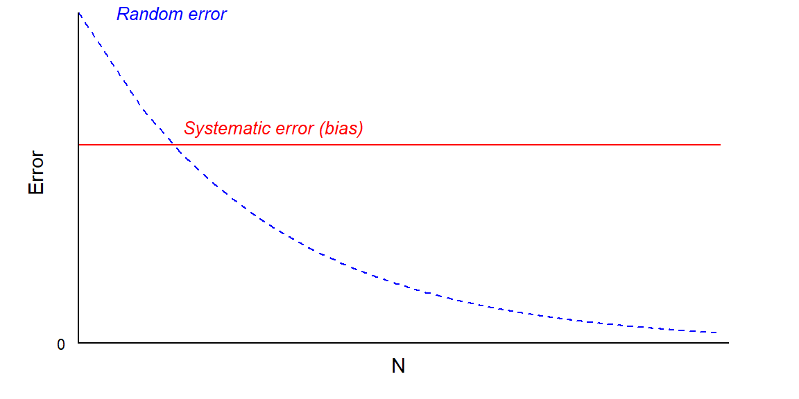

Code
# Plot settings
par(mar = c(2, 2, 0, 2),
mgp = c(0.2, 0.5, 0)) # First argument mgp, distance label to axis
# Data to plot
x <- 1:1000
y_random <- 1/sqrt(x)
y_systematic <- rep(0.6, length(x))
# Plot
plot(log(x), y_random, pch = '', axes = FALSE,
xlab = "N", ylab = "Error", cex.lab = 0.9)
lines(log(x), y_random, lty = 2, col = "blue")
lines(log(x), y_systematic, col = "red")
axis(1, at = c(0, 7), labels = c("", ""), pos = 0, tck = 0)
axis(2, at = c(0, 1), labels = c("0", ""), pos = 0, tck = 0, las = 2,
cex.axis = 0.7)
# Add text to figure
text(x = 1, y = 1, "Random error", cex = 0.8, col = "blue", font = 3)
text(x = 2.1, y = 0.65, "Systematic error (bias)", cex = 0.8,
col = "red", font = 3)
